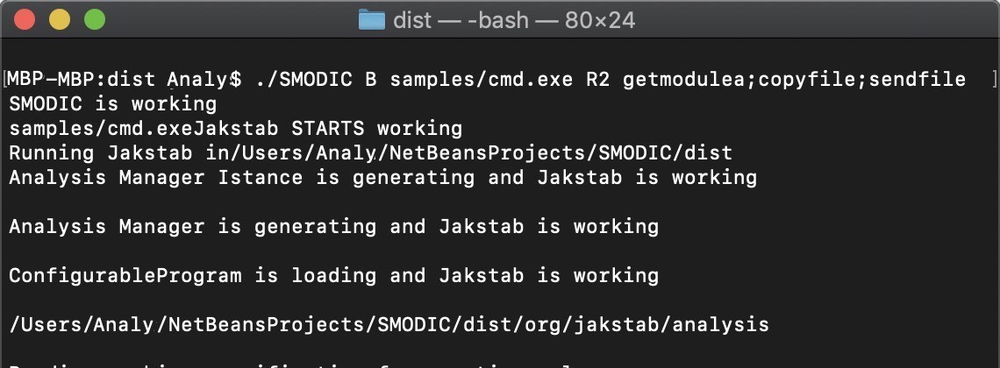
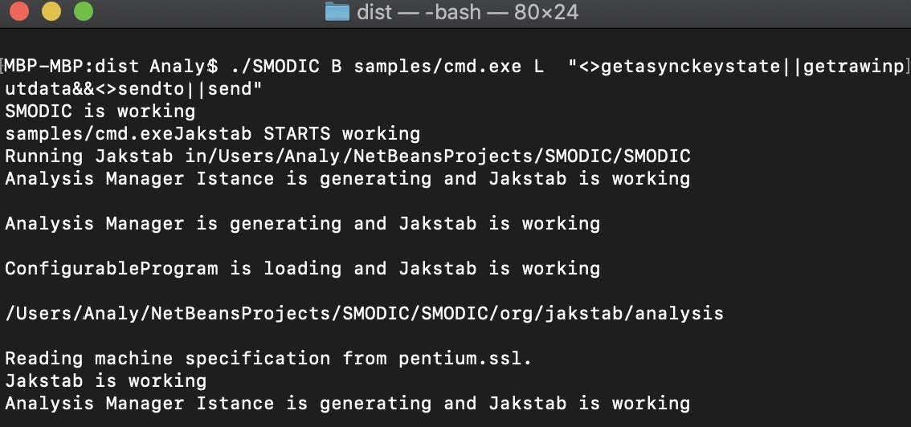
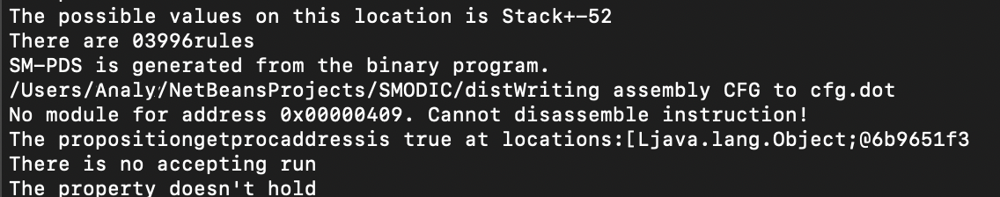

Overview
Architecture
Downloads
SMODIC can be obtained here: SMODIC.
It uses the following libraries:
Manual
To be able to use the SMODIC, you need to be familiar with the syntax of the logics LTL and CTL. The implementation of LTL and CTL operators in SMODIC are as follows:
| Operators for LTL formulas | |
| Propositonal Symbols: | true |
| false | |
| any lowercase string | |
| Boolean operators | ! (negation) |
| <-> (equivalence) | |
| && (and) | |
| || (or) | |
| Temporal operators | [] p (p always holds) |
| <> p (eventually p holds) | |
| p U q (p holds until q holds) | |
| X p (p holds next time) |
| Operators for CTL Formulas | |
| Propositonal Symbols: | tt（true） |
| ff(false) | |
| any lowercase string | |
| Path quantifiers | A (for all paths) |
| E (there exists a path) | |
| Boolean operators | ! (negation) |
| && (and) | |
| || (or) | |
| Temporal operators | Xp (p holds next time) |
| pRq (p holds until q does't hold) | |
| pUq (p holds until q holds) |
Quick Start
After downloading the above file, we can execute SMODIC by the following commands
./SMODIC < option1 > < modelfile > < option2 > < formula >
- Option1 specifies the input file of SMODIC:
- -M: the input is a SM-PDS model.
- -B: the input is a binary program
- Option2 specifies the model checking strategy:
- -L: use the LTL model checking algorithm
- -C: use the CTL model checking algorithm
- -R1: perform the Reachability Analysis using pre*
- -R2: perform the Reachability Analysis using post*
- The model file can be either a program or a SM-PDS (.smpds file). The output have three files: one for the Control Flow Graph, one for assembly codes, and one for the generated SM-PDS. A SM-PDS consists of four parts: a finite set of standard PDS transition rules, a finite set of self-modifying transition rules, an initial phase (the initial set of transition rules) and an initial configuration (initial control location equipped with the stack contents).
- In order to show this, we will use the following command to check whether the program cmd.exe can eventually call the API function GetModuleA or not. For this case, we execute the following command:
./SMODIC B cmd.exe L "< > getmodulea"
Here is the snapshot of the command to start SMODIC. In this command, “B" is Option1 specifying that the input is a binary program. ”L" specifies that the strategy of model checking is LTL.< > getmodulea is the LTL formula F (call GetModuleA).


